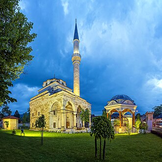

Pagpapakilala
La mosquée de Ferhat-pacha, plus généralement connue sous le nom de Ferhadija, est une mosquée située au centre de Banja Luka, l'actuelle capitale de la république serbe de Bosnie en Bosnie-Herzégovine. Construite en 1579, elle est inscrite sur la liste des monuments nationaux de Bosnie-Herzégovine.
مسجد فرحات باشا، المعروف عموما باسم فرهاديا، هو مسجد يقع في مدينة بانيا لوكا، العاصمة الحالية لـجمهورية صرب البوسنة في البوسنة والهرسك. المسجد بني في 1579م، وهو مدرج على قائمة الآثار الوطنية للبوسنة والهرسك.
Ferhat Pasha Mosque, also known as the Ferhadija Mosque, is a mosque in the city of Banja Luka and one of the greatest achievements of Bosnia and Herzegovina's 16th century Ottoman Islamic architecture. The mosque was demolished in 1993 at the order of the authorities of Republika Srpska as part of an ethnic cleansing campaign. It was rebuilt and opened on 7 May 2016.
Ferhad Paşa Camii veya Ferhadiye Camii (Ferhadija džamija), Bosna-Hersek'in iki siyasi biriminden biri olan Sırp Cumhuriyeti'nin fiilî başkenti Banja Luka'da bulunur.
Masjid Ferhat Pasha, juga dikenal sebagai Masjid Ferhadija, adalah bangunan sentral di kota Banja Luka dan merupakan salah satu mahakarya terbesar arsitektur Islam Ottoman abad ke-16 di Bosnia-Herzegovina dan Eropa. Masjid tersebut dihancurkan pada tahun 1993 atas perintah otoritas Republika Srpska, lalu dibangun ulang dan dibuka pada 7 Mei 2016.
فرہاد پاشا مسجد بوسنیا و ہرزیگووینا کا ایک مسجد جو بانیا لوکا میں واقع ہے۔
Die Ferhat-Pascha-Moschee, besser bekannt als Ferhadija-Moschee, stand bis zu ihrer Zerstörung 1993 im Zentrum Banja Lukas und war eines der schönsten Beispiele der osmanisch-islamischen Architektur des 16. Jahrhunderts in Bosnien und Herzegowina. Sie wurde wiederaufgebaut und steht unter Denkmalschutz.
La moschea di Ferhat-Pasha, conosciuta anche come moschea Ferhadija, è una moschea ottomana della città di Banja Luka, in Bosnia-Erzegovina.
फेरहादिया मस्जिद, जिसे फेरहाट पाशा मस्जिद के रूप में भी जाना जाता है, बोस्निया और हर्जेगोविना के सारायेवो शहर के बाशचार्शिया पड़ोस में स्थित एक मस्जिद है। इस मस्जिद का निर्माण 16वीं शताब्दी में बोस्नियाई संजाक-बे फेरहाद-बेग वुकोविच द्वारा किया गया था, जो प्रसिद्ध मध्यकालीन वुकोविच परिवार के वंशज थे।
Мечеть Ферхат-паши, также известная как Мечеть Ферхадия, расположена в самом центре города Баня-Лука, являясь одним из ярчайших примеров османской исламской архитектуры XVI века в Боснии и Герцеговине и в Европе. Мечеть была снесена в 1993 году при участии властей Республики Сербской. Восстановлена и открыта 7 мая 2016 года.
มัสยิดเฟร์ฮัด-ปาชา หรือ มัสยิดเฟร์ฮาดิยา เป็นมัสยิดในบันยาลูกา และหนึ่งในความสำเร็จที่ยิ่งใหญ่ที่สุดของสถาปัตยกรรมอิสลามแบบออตโตมันสมัยศตวรรษที่ 16 ในประเทศบอสเนียและเฮอร์เซโกวีนา มัสยิดถูกทุบทิ้งในปี 1993 ตามคำสั่งของทางการสาธารณรัฐเซิร์ปสกา ในภายหลังได้สร้างขึ้นใหม่และเปิดสู่สาธารณะอีกครั้งในวันที่ 7 พฤษภาคม 2016
Ferhat-paša-moskén (bosniska: Ferhat-pašina džamija; turkiska: Ferhad Paşa Camii), också kallad Ferhadijamoskén, är en central byggnad i Banja Luka och är en av de mest enastående byggnaderna som uppfördes i Bosnien och Hercegovina under 1600-talet av Ottomanska riket. Moskén förstördes 1993 under Bosnienkriget, men återuppbyggdes och återöppnade 7 maj 2016.
Sa mapa
Mga dokumento at link
- Wikipédia — Français
- Wikipédia — العربية
- Wikipédia — English
- Wikipédia — Türkçe
- Wikipédia — Bahasa Indonesia
- Wikipédia — اردو
- Wikipédia — Deutsch
- Wikipédia — Italiano
- Wikipédia — हिन्दी
- Wikipédia — Русский
- Wikipédia — ไทย
- Wikipédia — Svenska
- Wikidata — Q1267134
Datos: Wikidata (CC0), ina-update tuwing 3 buwan. Ang taon ay ang pinakamaagang alam na petsa ng pagkakatayo ng gusali: para sa gusaling naging moske kalaunan (gaya ng Hagia Sophia), ito ang taon ng orihinal na gusali. Mga larawan: Wikimedia Commons, ang may-akda at lisensiya ay nasa pahina ng bawat larawan.